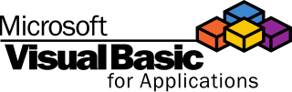

Автоматизация Office
Создает макросы для Excel, Word и других приложений Microsoft Office с помощью VBA. Ваш код будет оптимизировать рабочие процессы!
Примеры применения:
- Автоматизация отчетов в Excel
- Работа с шаблонами документов
- Интеграция с базами данных
Полезные инструменты:
- Visual Basic Editor
- ADO.NET для работы с данными
- Power Query
Desktop-разработчик
Разрабатывает GUI-приложения для Windows с использованием drag and drop. Ваш интерфейс будет удобным и интуитивным!
Примеры применения:
- Создание утилит для системного администрирования
- Разработка CRM-систем
- Интеграция с Active Directory
Полезные инструменты:
- Visual Studio
- Windows Forms
- WPF
Управление legacy-системами
Поддерживает устаревшие приложения на Visual Basic Classic. Ваш опыт будет востребован в корпоративной среде!
Примеры применения:
- Модернизация старых приложений
- Интеграция с современными API
- Миграция на .NET
Полезные инструменты:
- COM-интерфейсы
- WinAPI
- MS Access
Мотивирующий посыл
Visual Basic открывает двери в мир автоматизации и desktop-разработки! Вы можете стать частью команд, которые оптимизируют рабочие процессы, создают удобные интерфейсы или поддерживают корпоративные системы. Освоив VB, вы получите инструмент для работы с Windows и Office. Помните: каждый макрос — это шаг к новым возможностям!